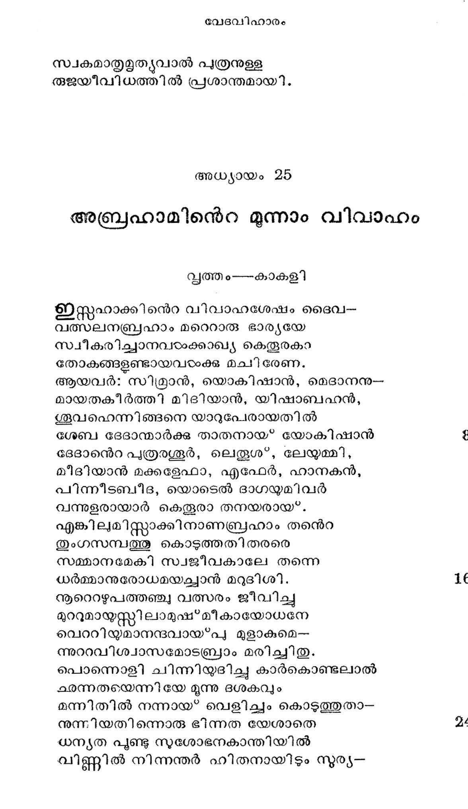

അധ്യായം 24
റിബേക്കാപരിണയം
വൃത്തം---ശീലവതി
സഹധര്മ്മിണി തന് മരണശേഷം
മഹിതനബ്രാം സ്വരഗ്ഗയാത്ര ചെയ്വാന്
കരുതല് വെടിപ്പായ* നടത്തി ജീവ--
ന്നറുതിവരുന്നാഠാക്ക് മുന്പു തന്നെ.
നിജഭാര്യ പൊയ്യോയി താനുമപ്പോ--
ലജരമ്മാര്ക്കുള്ളോരു ദിവ്യഭലോകെ
അചിരാല് പ്രവേശിക്കുമെന്നു കണ്ടു
രുചിരാശയന് തനെറ ഭാവിജന്മം
ഭവിക സപൂര്ണ്ണമായ*ത്തീരാനുള്ളോ -
രവശിഷ്ടകാര്യങ്ങടം നേരെയാക്കി.
മരണംവരുംമുന്പു മര്ത്ത്യരെല്ലാം
ശരിയാക്കിടേണം നിജാത്മകാര്യം.
കടപൂട്ടം മുന്പേ വിളക്കിനെണ്ണ
പടുതയാ വാങ്ങിച്ചകൊണ്ടിടാസ്ക്കില്
കൊടിയോരു രാത്രിയില് ദീപമെന്റേ -
യിടരോടിരുളിലിരുന്നുപോകും.
മരണര്ഥം തയാറായ*വരുമ്പോടം
നിരവധിമോദത്തോടായതിങ്കല്
ഉപവേശിച്ചീടുവാന് തക്ക മട്ടി --
ലുപരതനായി വിളങ്ങിയബ്രാം.
ശിശുതയില് സ്മന്യത്തോടലമല്ലാ-
രുചി യേററം തോന്നുന്നതാകമാനം.
പുരുഷത്വസന്ധിയില് നിന്ദ്യമായി
ക്കരുതുന്നവണ്ണം വിഷയമെല്ലാം
വിരതഥുണമായിത്തോന്നി മൂന്നു
കരണത്തിനും ശുദ്ധിനേടിയബ്രാം.
ഒരു സംഗതിരുണ്ടു ചെയ*വതിന്നു
ശരിയായതും ചിത്തിലോര്മ്മവന്നു.
നിജപത്രകന്നൊരു നാരിയാളെ
നിജനാട്ടില്നിന്നു സമാനയിപ്പാന്
പ്രജവേനപോയ് വന്നിടുവതിന്നു
നിജദാസവര്യ ്നനുജ്ഞയേകി.
പരജാതിയില്നിന്നു കന്യുകയേ--
യുരരീകരിക്കാതിരിപ്പതിന്നു
പരിചിലവനേ പ്രതിജ്ഞകൊണ്ടു
പരിബന്ധനംചെയ്തയച്ചു ധീമാന്.
ഉരചെയ്ത; ഭാസന് തരുണിയുടെ
കരളിന്നൊരാ കര്ഷണത്തിന്നായി
തനയന് തദ്ദേശത്തു ഞാനുമൊന്നി --
ക്വണയേണ്ട താവശ്യമാണു പാര്ത്താല്
ഗുണമേറും വസ്തുവും കണ്ടിടായ*കില്
തൃണമെന്നുതള്ളിടും മാനുഷന്മാര്
ഭവദീയപത്രന്െറ കാഴ്ചയിങ്കല്
വശഗയാം മാനിനി തക്കമില്ല.
പരലോകഭാഗ്യ മഗണ്യമാക്കും
പതിവിന്നു കാണായ*കയാണുമുലം.,
ഇതിനോതി യബ്രഹാ മദിശയില്
ഗതനായിടൊല്പവാ മദീയപത്രന്.
അവിടെനിന്നെന്നേ ജജഗത്രയീശന്
വിടുവിച്ചിവിടെ യയച്ചതിനാല്
തിരികെ ച്ചെൽവാനെന്റ സന്മധതിക്കും.
തരമാകരുതെന്നപേക്ഷയുണ്ടു്.
ഒരുനാളെടുത്തെറിഞ്ഞോരു വസ്തു
തിരയാന് നടപ്പതു യോഗ്യമാണോ?
കളിഭംഗിയായ* കഴിചല്ചോരു ജീവി
ചെളിയില് കിടപ്പാന് തുനിയുകില്ല.
പലവഴിയം നോക്കിവല്ലൊരാള--
മവിടം വിടുവാന് ശ്രമിച്ചി ടേണം.
അതുകോണ്ടുമാണെനന്െറ ഭൂത്യവര്യ!
സുതനു വേണ്ടീട്ടൊരു പെണ്മണിയേ
അവി ടേണ്ണെടുക്കേണമെന്നു ഹൃത്തി --
ലിവനു തോന്നാനിട വന്നതോര്ത്താല്.
മനസി വിഷമം ഗണിച്ചിടാതെ
ഭനുജാരി തന്െറ യാശിസ്റ്റിനാലേ
ത്രീതം പോയീടുക പട്ടദനാറാം
പുരിതന്നില് പൂര്ണ്ണമനസ്സൊടും നീ.
കരുണാനിധിയാകുമെന്െറ ദൈവം
പരമേശഭക്ത! നിന്മുന്നണിയായ"
മമ കാര്യം സിദ്ധിവരുത്തുവാനും
വിമലാത്മനാ നിന്നെ ക്കാത്തിടാനും
നിജഭൂതനെ യയച്ചീടുമേവം
വിജയിയായ നീയിങ്ങു വന്നു ചേരും.
പ്രഭാതവര്ണ്ണന
ഇതുകേട്ട ഭൂത്യന് മനം കുളര്ത്തു
മതി മോഭമാണ്ടു ദുഖം തെളിഞ്ഞു.
പനിമതി മങ്ങി സ്വരമ്ൃയകണ്ബേ
ഭീനമണി ചാര്ത്തി കിഴക്കദിക്കും.
പനിനീര് തളിച്ചു വിഭാതവാതം
കനികടം വഹിച്ചു ഭൂമങ്ങഠം നിന്നു.
ഇരുളിനന്െറ സന്താനപവ്ഡന്ദമെല്ലാം
പുരകളിന്മുൂലയില് പോയൊരളിച്ചു.
ഭവനത്തിനാുകവേ ഗില്ററു പൂശാന്
ഹരിദശ്വശില്ലിശ്രമം തുടങ്ങി.
തളിര്മേല് നിരന്നുള്ള മഞ്ഞുതുള്ളി
ഒളിചേര്ന്നു മാണികൃമായ* വിളങ്ങി.
ഉടനേ സവിതാവിന് ദീപ്യിമൂലം
പിടയുന്നു നീരാവിയായശേഷം.
ഇതുകണ്ടു മാലിനാല് രക്തവര്ണ്ണ-
വദനത്തൊടും പല്ലവോല്ക്കരങ്ങഠം
ചലമാണു സവ്വവുമെന്ന തത്വം
തലയാട്ടി സമ്മതിക്കുന്നു പാരം.
കടുതാം ചുമടു വഹിച്ചതിന്െറ
കൊടിയ സന്താപമുറക്കിനാലും
അടിവാന് കഴിഞ്ഞില്ല യെന്ന ഭാവ--
മടിയില്വച്ചാണോ മഹാംഗമിപ്പോടം
ചുടുവീര്പ്പു വിട്ടഗ്രസംസ്ഥമാം മുയം--
ചെടിയില് പ്പതിപ്പത ബ്ബാഷ്്ബിന്ദു.
ചരണായുധത്തിന്െറ ഗീതികേട്ട
വിരസത തോന്നിക്കയര്ത്തു താനോ?
പതഗങ്ങടം നാനാതരത്തിലുള്ള
രുതമുതിര്ത്തഭ്രത്തു പാറിടുന്നു.
അതികാല്ൃഭോജ്യം ഭജിച്ചു കൊണ്ടു
ചതിതെല്ലറിയാത്ത കര്ഷകന്മാര്
കരി തോളിലേന്തിദ്ധ്യരന്ധരത്തെൊ--
ടൊരുമിച്ചു പോകുന്നുഴവിനായി. 104
മനുജരേ! നിങ്ങരം ഭൂമിച്ചി ടായ*വിന്!
ജനമോഹനാകാരമി പ്രഭാതം
ഇതുമട്ട ഭംഗിയില് നിള്മെന്നു
മതികെട്ടു ചിന്തിച്ചുഴന്നി ടേണ്ടാ.
മീഹിരന്െറ ഘോരമാം ദീപ്ലികൊണ്ടു.
വിഗതാസുവാകുമിസ്ത്പ്രമാതം
അവസാനമില്ലാത്ത പ്രത്ൃഷ്സ്സിന്
നവജീവിതത്തിന്നിടം കൊടുക്കും 112
ക്ഷിതിയിന് പ്രതാപങ്ങളേതുമില്ലെ
ന്നിതിനാലറിഞ്ഞു പഠിച്ചുകൊടംവിന്
ഇതിവാചമോതി മന൯ുഷ്യവ്റ്റം
മൃഗതൃഷ്ണ തേടിത്തിരിവതോരത്തു
അതിയായ ചിരിച്ചുകൊണ്ടങ്ങുമിങ്ങും
സ്ഥിതിചെയ്തു വെണ്പൂക്കളാകമാനം.
അറാമിലേക്കുള്ള ഏലയാസറിനന്െറ യാത്ര
വെയിലേറി നെററിത്തടം ചുടും മുന്-
പയല്നാട പിന്നില്ക്കടത്തി വയ്ക്കാന്
ഫയല്മാന് വണങ്ങുന്ന വീരനീശ-
ഭയമുള്ളിലത്ൃന്തമുള്ള ദാസന്
യജമാനഭക്തിക്കു ദുന്പാനായോന്
നിജജീവന് സ്വാമിയ്ക്കുവേണ്ടി വയ്കോന്
സകലാധികാര മരുളിയബ്രാം
സമതവിളക്കിയ സല്ഗൂൂണാഡ്്യന്
തലനാരിനോളം പഴുതിടാതെ
തലവനെറ വാക്കിന്പടിക്ക പോവോന് 128
എലയാസനെന്നുള്ളൊരാഹ്വയത്താ-
ലുലകില് പ്രസിദ്ധി പെരികെയുള്ളോന്
ചെറുതും സമയം കളഞ്ഞിടാതെ
കരുതേണ്ടതൊക്കെയും ചേര്ത്തുകൊണ്ടു
പരിവാരമോടും തിരിച്ചു പത്തു
മരുപോത വാഹനനായി മാന്യന്.
മലയോട് കുന്നുകരം താഴ*വരകംം
ഫലമേറും നല്ല കൃഷിസ്ഥലങ്ങരം 186
അരുവികടം തോടുകളെന്നിതെല്ലാം
നിരയായ കടന്നവന് യാത്രചെയ്ത.
പരുമോദമുണ്ടായി പുണ്ൃഭൂവി-
്നുരിയോരലങ്കാര കാഴ്കമൂലം.
വരയാട് കോലാട$ കാട്ടാടുകാരം
പരിചിൽ ചരിയ്ക്കും തടങ്ങഠം കണ്ടു.
ഖരവും വൃഷഭം ക്രമേളകവും
സരസം തൃണങ്ങള ശിച്ചശേഷം 144
സരസിക്കരികിൽ ജലം കുടിപ്പാന്
വിരയ്ുന്ന ശോഭന കാഴ്കകണ്ടു.
മണലാരണങ്വ്യങ്ങരം
ഗിരിഭാഗമെലാ മതിക്രമിച്ചു
മരുഭൂമി തന്നില് ചരിച്ചു ധീമാന്.
അടിപൊള്ളം ചുടു മണല്ക്കുമീതെ
തടവി ല്ലാതുഷ്ടങ്ങരം യാത്രചെയ്ത.
ഉടയവന് ധന്വ പ്രയാണദുഃഖ--
മടയാവിധം സ്കൃഷ്മി ചെയ*കമുലം
മരുപോത മെന്നാണിവ ഇ്തലറാബ്യര്
പുരുമോദമേകുന്ന നാമധേയം.
കഠിനാതപം കൊട്ങ്കാററിവയാല്
തിടിരെന്നുണ്ടാകുന്ന പിഡയെല്പാം
സ*ഫുടമായെതിര്ത്തു ജയിച്ചു മായാ--
രൂടനം ചെയ്യുന്നോരു യോഗിപോലെ
പൊടി പോലം കൂസാതെ ലാക്കുനോക്കി
ച്ചൊടിയായ* ചരിക്കുന്നീ യൊട്ടുകങ്ങടം. 160
എരിതീ നികരാം സികത തന്നില്
കരിവരണ്ണമാണ്ടുളെളാ രൂഷ്ടവ്ശന്ദം.
കടുദീഷ്ിമാനാക മംശുമാന് ത-
ന്നുടലിന് കളങ്കംപോല് കണ്ടിട്ടന്നു.
ഖരസുരഭാസ്റോറു വായ്ുവിനന്െറ
ഘഘനമത്ര മാറിക്കിളര്ന്നിടുന്നു.
ലഘുബുദ്ധികഠംക്കു ചടുശ്രവത്താ--
ലകലെ ത്തെറിച്ചുപോം ന്രമുഭാവം. 168
ഉപരിപ്പവമാര്ന്ന വായ്യവിനന്െറ
വിപുലസ്ഥലത്തങ്ങു ശിതവാതം
നിറയുന്നുവെന്നാലും ചുടുതട്ടി
വിരിയുന്നു പൊങ്ങി വിതാനമെങ്ങും
അതികഠിനാതപമുള്ളിടത്തേ
സ്ഥിതിയേവമല്ലോ മരുത്തിനോത്താല്
കടലില് പതിക്കുന്ന ശുദ്ധതോയം
സ*ഫുടമുപ്പു വെള്ളമായ*ത്തീര്ന്നിടുന്നു.
വിടരുള്ള നാട്ടില് കടന്നുവെന്നാല്
ജടിയ്ും വിടനാകും തര്ക്കമില്ലാ.
ഇഹലോകയാത്ര തുടര്ന്നുചെയ്യും
മഹിതന് വിഷയങ്ങളേ ശിടാതെ
തനതംഗമെല്ലാമടച്ചു വയ്ക്കും
വിനപോല് പൊടിതൂകി ചക്രവാതം
അണയുന്ന നേരത്തു നാസരണ്ടും
കുണയോടടച്ചു നടന്നിതുഷ്പം.
ബുദുരമിങ്ങനെ യാത്രചെയ്ത
ബലാധധാ തളര്ന്നു വലയുമപ്പോഴം
അകലത്തു കാണുന്നു ചോലയൊന്നു
നയനദ്വയത്തിന് മഹോത്സവമായ.
ഇഹലോക ജീവിത സീമതന്നില്
വിഹത സഹായമാം മൂത്യവക്കില്
നിലകൊള്ളം ഭക്തന്നു ദൂരദിക്കില്
പൊലിയാത്ത കാന്തിയില് സ്വറ്സയധം
തെളിവായി വാഞ്ച വളര്ത്തിടുംപോല്
അഥവാ മഹത്താം സമുദ്രമദ്ധേയേ
തലകീഴായോടുന്ന കപ്പലിന്നു
വലുതായ ബന്തര് വിളങ്ങിടുംപോടം
എലയാസറിന്നും സഹചരര്ക്കും
കലയാത്ത സന്തോഷം നല്കി ചോല.
സികതാമയമാമി സ്റ്റിസ്ധുവുടെ
പ്രഗതി തുടര്ന്നുള്ളൊരുഷ:ട്ര്ഡന്ദം
വിഗതാമയം സവയ്യ പാന്ഥരേയം
നിഹിതമാം ഭാണ്ഡവ്രജത്തി നേയും
സ*ഫുരിതാത്മധൈര്യം വഹിച്ചു ചോല-
ഇൂരികത്തു ചെന്നു ചിരേണ ചേര്ന്നു.
കനകമയമായ കേവണത്തില്
മരതകപ്പച്ച പതിച്ചപോലേ
മരുഭൂമിമദ്ധ്യേ വിലസുമുവ്വീ--
പറുടീസിതിനന്െറ മനോജ്ഞകാന്തി

പഠവാന് കഴിവില്ല പച്ചുവര്ണ്ണം
പഥികര്ക്ക നല*കം നയനസെൌഖ്യം.
ഉറവയൊന്നുണ്ടു പളജടതോല്ക്കും
നിറമാണ്ടൊഴുകിത്തപംകെടുപ്പൂ.
മധുരഫലം തിങ്ങുമീന്തുവ്വക്ഷം
സകടംബമമ്പോ! നിരന്നുനില്പു.
ഇതുപോലെയങ്ങിങ്ങു കാണ്മതുണ്ടി --
പ്പതുഭംഗി തിങ്ങും നുഖപ്രദേശം.
ചുടുമണല്ക്കാട്ടിലിതാരുവാന് പോ--
ലിടവിട്ട നിര്മ്മിച്ചു വച്ചിരിപ്പൂ.
ശിശുവിന്നുവേണ്ടി സ്വമാതൃരക്തം
രുചിയള്ള പാലായ* പ്പകര്ത്തുമീശൻ
ഇതരഗതിയകന്നുള്ള പാസ്ഥ-
ക്ഭതവിക്കായി ബ*ഭൂമി തീര്ത്തിരിക്കാം.
സരണീചരന്മാരിവിടിറങ്ങി
സ്വകമാം ശരീരതളര്ച്ച തീര്ത്തു.
അതരുളീ മഹാംഗത്തിനുള്ള ഭക്ഷ്യം
നുരസംഘവും ഭോജ്യമാഹാരിച്ചു.
അരയും തലയും മുറുക്കി വീണ്ടും
മരുയാത്ര ചെയ*വാന് മുതിര്ന്നു ദാസന്.
എലയാസര് യൂഫ്രാത്തസ* നടീതീരത്തെത്തുന്നതു*
ചിലനാളിതേവിധം യാത്രചെയ്ത
മണല്ഭ്ൂമി മുററും കടന്നശേഷം
പെരുതാം *യവപ്രസ്ഥ? സിസുവി ന്െറ
യരികത്തണഞ്ഞു വിധേയവീരന്.
ഇളകിമറിഞ്ഞു വിരതിയില്ലാ-
തൊഴുകുന്ന ഗംഭീരയാം സ്രരവന്തി
തളരാതെ നാശത്തിലേക്കു പായ്യ-
മുലകത്തിന് സാദൃശ്യ ഭാവഹിച്ച.
കടുരാവമോടെ തരംഗപങ്ക്തി
കൊടുതാം വിധത്തിലടത്തുമുട്ടി--
തകരുന്ന ഘോഷം ശ്രവിപ്പവര്ക്കു
തികിലേറാമുള്ളില് വളര്ത്തിടുന്നു.
വലുതാം തടികളും നഴകകളം
എളതാംവിധത്തില് പിടിച്ചു താഴ*ത്തി
അടവെ വിഴുങ്ങും ചുഴിസരിത്തിന്
കടുതായ വായ*പോല് പിളര്ന്നു നില്പു.
ഇരുതീരവും തന് പുരോഗതിക്കു
തടയാണെന്നുള്ളോരു ചിന്തമൂലം
കരകം പൊളിപ്പാന് തരംഗ കൈകരം
വിരവില് പരത്തുന്നു കൂലഭാഗേ.
ചില വ്ൃക്ഷശാഖകളാററിലേല്കൂ
തലനീട്ടി വെച്ചു സഖം ശയിപ്പൂ.
അവയില് തടഞ്ഞു ജലപ്രവാഹം
വിവദിച്ചു നിന്നു കുറേ സ്റ്റമയം
തദനന്തരം ശക്തിയാര്ന്നൊഴുക്കിന്
മദവാഹസാഹ്യാല് പിടഞ്ഞു തെററി
നിജശര്രൂബാഹാവിമുക്തിയാലെ
രുജ നീങ്ങി രാജിച്ച വീരനേപ്പോല്
പ്രച്രം നദിച്ചു നുരച്ചിരിയോ-
ടചിരാല് ഗമിക്കുന്നു ദരപ്പിതയഘം.
കരചേര്ന്നൊഴുകുമി സ്ത്രിസുവിന്െറ-
യരികില് ചെറുതാം ചെടികാം നിന്നു
വിറകൊണ്ടിടുന്നു; സരിത്തു കണ്ടു
ദരമവയ്ക്കള്ളില് വളര്ന്നപോലെ.
തടസ്ീമ*നി വാനം പിളര്ന്നു നില്ക്കും
വിടപിവ്വജം നിജമൂലനാശം
സതതം ഭയന്നീ നദിക്കനല--
വിതതാദരം പത്രപപ്ച പക_--
തതിയാല് പദാര്ച്ചന ചെയ്ത മേവ -
ന്നധനാപി തല് പാര്ശ്വവര്ത്തി ഭാവാല്.
ചെളിമണ്ണിനോടുള്ള വേഴ്ചയല്ലോ
വിളയാടും ഫ്രാദിനീ തന്മുഖത്തില്
തെളിയുന്ന വര്ണ്ണ വികാരഹേതു
കളിയല്ല സംസ്ക മെത്ര ഗണ്യം.
നടിയെക്കുറിച്ചുള്ള തത്വചിന്ത
പ്രകൃതിസ്ഥ തത്വ വിചാരശീലന്
സുകൃത കവചിത കാമ്യ ചിത്തന്
എലയാസറീ വന്നദിക്കരന്ക്
നിലകൊണ്ടിതേവിധം ചിന്ത ചെയ്ത:
പെരുതായവസാന മാദിരണ്ടു--
മറിവാനിദാനീ മസാധ്യമായി
സ്ഥിതിചെയ്യുമീവന്സരിത്തു വിശ്വ-
സ്ഥിതിയെ വിളക്കുന്നു ഭംഗമെനേ്യ.
അകമൊത്തു നോക്കില് കലുഷഭാവം
വിഹരിച്ചിടുന്നൂ സമാനമായി;
ജലവീചിയാണൊന്നില് മററത്”ങ്കല്
നിലവിട്ടൊരാശാ തരംഗമത്രേ.
കുഴിയും മലരിയും മാനുഷര്ക്കു
പിണയും വിപത്തിന് വിഭിന്നരൂപം.
ഹൃദയാടവിയില് ചരിച്ചിടുന്ന
മദമോഹമാദിയാം ഹി സ്രരജാതം
നദിയില് കിടക്കുന്ന ഘോരയാദോ.--
നികരത്തിനേററം സമാനമല്ലോ
സമതോറുമെണ്ണററ ജീവഹിംസ
സരിതി നടപ്പൂ, ഭവസ്കലത്തും
ഖലപീഡ പേടിച്ചരണ്ടുപോകും
ബലഹീനമര്ത്യര് നദിക്കരന്റ്കു
വഹാനം നിമിത്തം വിറച്ചുനില്്ക്കും
ചെടികടാംക്ക് സാമ്യം വഹിച്ചി ടന.
ചിലനാടം കവിയ്യം സമൂദ്ധിമൂലം
ചിലപ്ോതു വററുന്നു സിസുപാത്രം
വിവിധാകൃതി പുണ്ടഭിചലിക്കും
ഭവനസ്ഥിതിയുമിതിന്നു തുല്യം.
ഒരുനാടം മുടിചുടി വാഴുമീശന്
മറുനാടം കരത്തില് ചിരട്ടയേന്തി
തെരുവേ നടക്കുന്നു ഭിക്ഷയത്ഥി --
ക്വിതരൂവേ ജഗത്തിന്സ്ഥിരസ്വഭാവം.
ബഹഭംഗി തിങ്ങിച്ചെറു ചെടിയില്
വികസിച്ചു നിലം സരമ്ൃ സുനം
ത്വരിതം വെയില്കൊണ്ടു വാടി വീണു
കരിവുണ്ടു മണ്ണില് കലര്ന്നിടുന്നു.
ഒരു കായ് നിലത്തില് കുഴിച്ചു വയ്ക്കെ
വിരവില് മുളച്ചു കിളര്ത്തസംഖ്യം
ശിഖകരം ചെറുചില്ല സസ്യജാത--
മിവതിങ്ങും വന്മരമായ* വിളങ്ങും;
ഫലമൊന്നില് നിന്നങ്ങറുതിയില്ലാ-
ഫലികളളവായിള നിറയ്ക്കും;
ചില കായ*കഠം താനെ നശിച്ചുപോകും,
ചിലതു ചെടിയായ് ദ്രവിച്ചു വീഴും,
ചിലവറാവ്ൃക്ഷമായ*ത്തീരന്നുശേഷം.
പല കാരണത്താല് പ്രമീതമാകും.
വലുതായ കാടും ദവാഗ്നി. കത്തി-
ത്തലയമശേഷം ഭസിതമായി
ഇതുപോലെയാം ജന്തുവ്ൃന്ദലോക-
സ്ഥിതിയും ക്ഷതിയ്ം ജനിയമോത്താല്.
മുകളില്നിന്നോലും ജലത്തിലല്ും
നി ലകൊള്ളന്നുണ്ടോയി വിടെയെങ്ങാന് ?
സരിലം വരുന്നു, കടന്നു, പാഞ്ഞു
മറയുന്നു, സമ്പാതദിക്ക നോക്കി.
നിരവധി മര്ത്യ പരവരയ്--
ധരയിൽ പിറന്നു പരന്നുപോന്നു
ഒരുവരും ബാക്കിയില്ലാ പ്രതന-
തലമുറതന്നിലിരുന്നവരില്.
അതിവിസ്തൃതമീ നദി കടന്നാല്
ഗതിയുണ്ടാമുദ്ദിഷ്ട പത്തിനത്തില്.
ചതികൂടുമീ ലോകമുത്തരിപ്പോന്
മതിമാനവന് സ്വര്പ്പുരത്തില് വാഴം.
പള അരാമില് എത്തിച്ചേരുന്നതു*
ഇതി ചിന്തചെയ്ത പരേശഭക്തന്
ഹൃദയാംബുജത്തിലിരുന്നരുളം
പരമേഷ്മഷി തന്െറ പദം വണങ്ങി
ത്വരിതം നദിയേത്തരിച്ചു നിന്നു.
ഉരുവേഗമോടും തിരിച്ചു നാനാ-
പരിവാരപ്വന്ദ സമേതനായി.
ദിനമന്ത്യയാമ മടുത്തിടുമ്പോരം
ഘനശാലിയെത്തി യരാമ്യ പുരിൽ
നഗരത്തിലുള്ള പ്രഹിക്കടുത്തു
സുഗുണന് സ്ഥിതിചെയ്ത സാനുഭാവം.
അതുനേര മപ്പുര വല്ലിയിലെ
ഭൃതിചിന്നും കന്യകാ പുപ്ണവ്വന്ദം
ജലസംഭൂതി ക്കാററിലാഞ്ഞു പാറി
സ്ഥലമതിലെത്തുന്ന കാഴ്ച കണ്ടാന്.
അനവദ്യ സന്ദേര്യ സാരമേന്തും
കനകാംഗിമാര് തത്ര വന്നനേരം
എലയാസറീശനെറ സന്നിധിയില്
കലിതാദര മേവമോതി യാച്ഞാഃ
ഭജനീയ! ഭാഗ്യാബ്ബിയാകുമെന്െറ
യജമാനനബ്രാം വിനയപ്ൂവ്വം
വരിവസ്ൃചെയ്യും ജഗല്പ്രഭോ! നി-൦
നതിരു ദാസനെയോര്ത്തു മല്ഗമാത്ഥം
പരിപൂര്ണ്ണ ഭംഗിയില് സിദ്ധമാക്കി--
ആരുവാന് ഭവല്പത്തു കുമ്പിടുന്നേന്.
പുരവാസിപ്വന്ദ സുതകളിപ്പോടം
സരിലാത്ഥ മഭ്യാഗതകളാവു.
അവരിലെവംടം മമ നാഥനുള്ള
സഹധര്മ്മിണിയായ* ഭവിച്ചി ടേണ്ടു ?
നിയതി നമിക്കു മവളെ യിങ്ങു
ദയചെയ്ത കാണിച്ചരുളണമേ.
അടിയന്നു തൃഷ്ണാശമത്തിനായി
മടുവാണിമാരോടു നീരിരക്കെ
ഉടനേയിവന്നു മിവനെറ യുൃഷ്ട-
ഘടയ്ും കുടിപ്പാന് തികയ വെള്ളം
ത്ധടിതി തരാമെന്നു ചൊന്നിടുന്ന
നിടുനേത്ര മത്സ്വാമി പത്നിയാവാന്
തവനിര്ണ്ണയത്താല് നിയ്യക്തയെന്നു
ഭവദീയ ദാസനറിഞ്ഞുകൊള്ളം .
അധിഭൂവി നോടുള്ള ത്വല്പ്രിയത്വ-
മിതുമൂലവു മഭിവ്യക്തമാകും.
ഇതിയാച*ഞ ചെയ്ത വിരതമായ
തരുണത്തിലീശനെറ സുപ്രസാദാല്
ഇസഹാക്കു തന്െറ പിതൃവ്യ പുത്ര--
നുതയാം റിബേക്ക യവിടെ യെത്തി
പ്രഹീയിലിറങ്ങി ജ്ജലം നിറച്ചു
കലശം വഹിച്ചു പുറത്തുവന്നു.
അതി മോഹനാകാരയാ മവടം തന്
തനു കാന്തി ദാസന്നു ചിത്രമേകി.
വദനത്തിനുള്ള സുഷമ പാര്ത്താല്
ക്ഷിതിയിലുപമാന വസ്തവില്ല.
മുഴുചന്ദ്രന് വന്നാല മമ്പരന്നു
കഴുകേണം തന്െറ കളങ്കപങ്കും.
അതു ചെയ്തവെന്നാലും മന്ദഹാസം
മതിമുഖി തന്െറ മുഖപ്രകാശം
ശതഥഗുണമാക്കുന്ന കാരണത്താല്
വിധുവും മടുത്തു മടങ്ങിവാങ്ങും.
അളിമഞ്ജു മാലാ നിലീന ശുഭ്ര-
നാളിനാഭ വെലും വിധത്തിലല്ലോ
അളകങ്ങരം പാറിപ്പരിലസിക്ക--
മളികം വിളങ്ങുന്ന തജ്ജുനാഭം.
പരിപൂര്ണ്ണ ചൈതന്യം, ദീനരോട്
ള്ളരിയോരു കാരുണ്യം, മിത്രവറ്റേ
പെരുതായ പ്രേമ പ്രകര്ഷം,മെന്നി--
യുര പൊങ്ങും ശ്രേഷ്ഠഗുണങ്ങളേന്തി
സ്റ്റടികാഭമാകും സരസ്റ്റിലങ്ങി--
ങ്ങടനം തുടരും ശഫരതുല്യം
സ*പഫുടനേത്രയശം തടിന്മയമാം
പടിമാവ തിങ്ങിത്തിളഞ്ടിടുന്നു.
രൂചിരാംഗി തന്െറ വിശി ഷ്യനാസ-
ജൂചിത മുപമാനമായ* ശുകത്തിന്
പവിഴപ്രഭയുള്ള ചുണ്ടുചേര്ന്നു
വരുമെന്നിരിക്കിലും കൂര്പ്പുമുലം.
ഉപമാനഭാവം ലഭിപ്പതിന്നു
കഴിയാതെ പോകും വിതര്ക്കമില്ല. 408
അധരരോഫഷ്ടകരത്നങ്ങഠം പത്മരാഗ--
ഭൃതി ചേര്ന്നു ഭംഗ്യാ വിളങ്ങി മേന്മേൽ.
തെളിമുത്തു നാണിച്ചിടുന്ന മട്ടി
ലൊളി തിങ്ങും ശുഭ്രരദന പങ്*ക്തി
തെളിയുന്നു ചണ്ടിന്നടുത്തഹോ ചെ
ന്തളിരാര്ന്നിടും മുല്ലമൊട്ടുപോലെ.
കളവാണി കഞ്ണബത്തൊടേററു തോററു
തുളവീഴുമാറുവിനിശ്വസിച്ചു 416
ചളിതോന്നിമുങ്ങിക്കടല് ക്കടിയി-
ലിളകൊണ്ടിടുന്നു ദരങ്ങളെല്ലാം
കളധരത കാന്ത ശലാകയി ന്മേൽ
നളിനം സുവര്ണ്ണമയം വിടന്നു
ലളിതം പ്രകാശിക്കും മട്ടിലല്ലോ
നളിനാക്ഷി തന്െറ കരപ്രകാണ്ഡം
വിലസി; തുടുത്ത പടദങ്ങഠംകൊണ്ടു
ലലനാമണി ഭൂമി രമ്യമാക്കി. 424
അവടം തന്െറ തോളില് വഹിച്ചിരുന്നോ
രരുണാഭമായ ഘടത്തിനാകെ
കരശോഭകൊണ്ടു ജപാസുമത്തിന്
നിറമുള്ള വാര്ണീഷ്യ പുശിനിന്നതൂ.
സകലേശ സംപ്പരേരണത്തിനാലെ
സ്ഥലമതില് വന്നോരിക്കന്യയാളെ
സകതുകം വന്ദിച്ച പാസ്ഥമയലി
വിഗതസന്ദേഹ മുരച്ചിവണ്ണം . 432
കരുണാപയോധിയാം കന്യയാളെ-
പരദേശിയാകുമി സ്ലാധുപാസ്ഥന്
പെരുതായ ദാഹം നിമിത്തമിപ്പോഠം
പരവശനാകുന്നു സന്ദരാംഗി !
പ്രഹിയിലിറങ്ങി ജലമെടുക്ക
ബഹുഭദുഃഖമെന്നാല മുള്ളലിഞ്ഞു
കുറയജ്ജലം തന്നു തര്ഷശാന്തി
വരുവാന് കനിയേണമംബുജാക്ഷി! 4:40
ഭൂതകനന്െറ വാക്കിലുദാര ഭാവ-
വികസിതനേത്രയാം റേബികാംബ
പരസാഹ്യ സന്തുഷ്മഷിയോടുകൂടി
സ*ഫുരിതളദുസ്മിത യേവമോതി
വിഷമിക്കിണററില് നിന്നുന്നയില്ലാന്
വിഷമമിരിക്കിലും വിപ്രവന്ദ്യ!
തൃഷപൂണും നിന്പേര്ക്കു ഭാരമല്ലം
വിഷഹിപ്പതിന്നു മടിചിടാ ഞാന്.
ഉപകാരം ചെയ്വാന് ലഭിച്ച ഘട്ട--
മുപഹനിക്കില്ല ഞാന് തെല്ലപോലും.
തവദാഹശാന്തി വരുത്തുവാനും
മയവ്ഡന്ദമാകെ ക്കുടിക്കുവാനും
മതിയായ വെള്ളം കിണററില്നിന്നു
മതിമന്! തരാം കോരി മായമെന്യേ.
ഇതിചൊന്നു പാത്രസ്ഥമായ തോയം
ഭൂതകന്നുവേണ്ടി ക്കൊടുത്ത ശേഷം
മൃഗപാന തോയാത്ഥ മക്കി ണററില്
ഖഗവേഗമോട മിറങ്ങി ബാലാ.
ബഹുപാനശീലങ്ങളൊട്ടകഞങ്ങഠം
നിഹിതാംബു ജോഷം കുടിക്കയായി.
ഒരു പാത്രം വെള്ളമൊഴിച്ചു രണ്ടാ-൦
യഥമുന്നു നാലഞ്ചൊരെട്ടപത്തായ്.
ഇതുകഠംകൊണ്ടൊന്നും ക്രമേളകങ്ങയം
മതിയാക്കിയില്ല കുടിച്ചവീണ്ടും.
ഉടനേയവഠം പോയ ജലംഗ്രഹിക്കും
തിടിരെന്നു തോണിയില് കൊണ്ടൊഴിക്കും
മടിതെല്ലുമെന്യറേ യദ*ധര്മ്മകര്മ്മം
ചൊടിയോടു തീര്ത്തു പടുസ്വഭാവാ.
അനുവേലമാവന് പ്രഹിക്കകത്തും
അതുപോല് പുറത്തും മൃഗഗണത്തിന്
സവിധത്തിലും ദിവ്യ കാന്തിയോടു
സവിശേഷം സന്ദൃഷ്ടയയായി ബാലാ
നവമേഘമഭ്ധ്യേ ബഹുത്രമിന്നി
ഭവികപ്രഭയിൽ തെളിഞ്ഞു പായും
നിരുപദ്രവമാം തടിത്തിനോടു
പരിപൂരണ്ണസാമ്യം വഹിച്ചുനിന്നു.
ഭൂതകനിതിലേററ മത്ഭൂതപ്പെ --
ടതുലസന്തോഷം കലര്ന്നു ചിത്തില്.
അതിയാം ഗൂണമേതു ജീവിയിലും
മതിമോദകാരണമാണു ന൯നം.
അതുമല്ല തീറാനുതനന്െറ രക്ത-.
മതുതാന് സരിക്കുന്നീ നാരിയാളില്.
ഗൃഹജോലി., തന്ദ്രി, ശ്രമാഭിഭീതി,
മഹദാശയത്തോടിവ വെടിഞ്ഞു
കുടമുദ്വധഹിക്കയാല് കൈകളോറം
കടുതായ്*ച്ചുവന്നും ചുമലുതാണും
നെടുവിര്പ്പടങ്ങാഞ്ഞു നെഞ്ചു പാരം
കുടയുന്ന മട്ടിലിളകി : ഫാലം
പൊടിയും വിയര്പ്പിന്െറ തുള്ളി ചേര്ന്നു
വടിയും ജലത്താല് പ്രസിക്തമായും,;
പിടയുന്നു ധമ്മില്ലമങ്ങു കയ്യാൽ
തടവിശ്ശരിയാക്കുവാന് ശ്രമിച്ചും,
വെയില്കൊണ്ടു വാടിത്തളര്ന്ന മുല--
ജ്ലിയലുന്ന വാട്ടത്തൊടെങ്കിലും ഹാ!
പരഗുണകമ്മനിരതതയാല്
പുരുശോഭ പൂവ്വാധികം വഹിച്ചും,
ക്രണാരവിന്ദ പതനജാത-ട
സ്ഥലപത്മയുശം രചിച്ചുമഗ്രേ
നിലകൊള്ളം സുന്നേഹശീലയാല് ഭൂ-
തലവും ദിവവം പ്രദീപ്ഛമായി.
ഉടനേ വിനേതാവു ചിതകൃത്ൃ--
പടുവായ ദിവ്യന്, നീയോജ്യവീരന്
മടവാരണി മുത്തിലുള്ള നന്മ-
യഃടവേ ഗ്രഹിച്ചോരു തത്വദര്ശി,
ഒരുനാളം പൂജ്യര്ക്കു പൂജ ചെയ്വാന്
മറവി വരാതുളള ധര്മ്മനിഷ്ഠന്
തപനീയ ഭൂഷാമതല്ലിയെല്ലാ--
മുപചയിച്ചുള്ളോത് പേടകത്തേ
വിരവില് തുറന്നു കളാദനുള്ള
നിരുപമകയശലുൃമുദ്രയാകും
പരിപൂര്ണ്ണചന്ദ്രാധികാഭയാര്ന്ന
വലയദ്വയം നാസികാവിഭൂഷ
ഇതുകളെടുത്തു മശിഹതനെറ
പദസേവകര്ക്കു കൊടുത്തിടുന്ന
മതിമോഹനാലംകൃതികളേപ്പോല്
ബെതുവേല്സുതയ്ക്കു കൊടുത്തു ശീഘ്രം.
അവളോടവനോതി യേതുമാന്യന്
തവ പിതൃഭാവം ധരിച്ച ധന്യന് ?
നിശപോക്കുവാനീ വിദേശജന്നു
വശമുണ്ടോ നിങ്ങടെ വിട്ടിലിന്നു?
ഉരചെയ്യവളിതിന്നുത്തരമായ്:
സരളന് ബെതുവേലിന് പുത്രിയീഞാന്.
നിലയത്തില് പാര്പ്പാന് തരമിരിപ്പൂ
മയവ്ഡന്ദത്തിന്നുള്ള തീനുമുണ്ടു.
ഉടനേ വിനേതാ വഖില നാഥ--
പദതാര് വണങ്ങി സ്കൃതിച്ചിവണ്ണം:
മമ യാത്രയേവം സഫലമാക്കി --
യിവിടേക്കിവനെ സ്റ്റമാനയിച്ച.
യജമാനനബ്രാമിന് ധര്മ്മദൈവം
ഭജനീയനത്രേ യിനിക്കു നിത്യം
പരദേശ കാരുണ്യം സത്യമെന്ന്
യരിയഗുണങ്ങളിതില് തെളിഞ്ഞു.
മഹിളാമണി യോടിയെത്തി വീട്ടില്
വിവരം ധരിപ്പിച്ച നേരമുളളില്
മുഭമേന്തി സോദര്യനായ ലാബാന്
ചതുരന് ഭൂതകനന്െറ മുന്പിലെത്തി
ഉരചെയ്ത സവ്യേശ്വര പ്രസാദ
സ*ഫുരിതമുഖനാം പഥി കനോടൂ:
ഭവനേശിതാവാലന൯ുഗ്ൃഹീത!
ഭവദീയ പാര്പ്പിന്നു മന്നിവാസം
സപദി ശരിയായി വച്ചിരിക്കു--
ന്നിവിടേന്നു പോയങ്ങു വിശ്രമിക്കാം.
ഇതുകേട്ട സന്തോഷമാര്ന്നു ഭൂത്യന്
സദനം പ്രവേശിച്ച വേണ്ടതെല്ലാം
ചിതമാംവിധത്തില് ക്രമപ്പെടുത്തി
സ്ഥിതിചെയ്യു മാഗാരനാഥനാകും
ബെതുവേലിനേയ മിതരരേയ്യം
നതി ചെയ്ത നന്ദ്യാകൃതജ്ഞ മയലി.
പതിവിന്പടിയവര് പാദശുദ്ധി --
ക്കുദകം കൊടുത്തു പുനരവന്നു
പശിതീരുവാനായ* വിളംബമെനേ്ൃയ
അശനമരുളാന് മുതിര്ന്നുടനേ
തടചെയ്ത, ഭക്തിക്കു മുന്പെനിക്കു
തിടമായ്യരയക്കേണ്ട കാര്യമുണ്ടു*
ഭൂതിഭൂക്കിദം ചൊന്നു തന് നിയോഗ
കഥയമതീിന് സാദ്ധ്യ സംഗതിയും
കിണറിന് സമീപെ നടന്നതുമ--
ങ്ങങ്ുവും പിഴയാതുരച്ചു കൊണ്ടാന്.
രസപുഷ്മാമി പ്രസംഗമദ്ധ്യേ
തനതിഷുനാഥന് യിസാക്കിനുള്ള
പ്രചരിമകോലും ധനസ്ഥിതിയും
നസുചരിതഭാവവും യവനത്തിന്
തദനന്തരം ഭക്തി ചെയ്തറങ്ങി
സദനാനത്തരത്തിൽ സ്വശയ്യതന്നില്.
ഭവനസ്ഥരെല്ാരും നിദ്രയാകും.
ഭുവന പ്രസ്മത പ്രളയമഭ്ധ്യ
പ്രകൃതീശ്വരി തന്െറ കൈത്തളിരില്
നസുഖശയ്യ പുണുഭമ്പാരം റേബികാംബ
വിധിധ വികാരവിചാരധാരാ-
വിചലിത മാനസയായ* വലഞ്ഞാടം.
ശയനീയ മദ്ധ്യേ സ്വഭൃഷ്ടി പൂട്ടി
ശ്ലയനാത്ഥമങ്ങു കിടന്നിടുമ്പോഠം
പ്രതിനവമാമൊരു ശക്തി വന്നു
കൃതിമുഖി തന്നെയണര്ത്തിടുന്നൂ.
അധരിതനി ര്ജരനാകുമേതോ
പുരുഷന് സമീപേ വരുന്നതായും
അവളേ പ്രിഷ്വജിചിീടുവാനാ
ഭവികസ്വരൂപന് ശ്രമിപ്പതായും
അതുമുലമെന്തെന്നുരന്തുവയ്യാ
വിധമാകുമാനന്ദ മാര്ന്നതായം
കരളിലവരടംകണ്ടു കാമ്ൃരൂപ
കബളിതയായനുരക്തചിത്താ.
ഉടനേയെണീ്ററു മുറി മുഴവന്
അടനം തുടര്ന്നു കിടന്നു വീണ്ടും.
പടുതയുറക്കത്തിനുള്ള താരോ
അടവേ ഹരാിച്ചൊരു മട്ടിലായി.
വിരിയില് ക്കിടക്കും കുറേസ്റ്റമയം
വിരവിലെഴുന്നോറിരിക്കുമലം
മുറിയില് പലേടം നടന്നു പിന്നെ
വെളിയിലിറങ്ങി മയങ്ങിനില്ലം.
ഗദബാധയല്പവാ വിശപ്പുമല്ല
സ്വജനം വെറുത്തുള്ള ദുഃഖമല്ല
അവമാനജാതവൃഥയമല്ല
ധവളാംഗി തനെറ മനക്കുലക്കം.
ഇതരവിചാരങ്ങളാകെ നീങ്ങി
ഹൃദയത്തിലേതോ കമിതൃരൂപം
പതിയുന്നുരാഗ പ്രവാഹമാണി
സ്ഥിതിയെന്നു ചിന്തിക്കവേണ്ടതി പ്പോരം.
ഭൂതകവചസ്ത്ാകും തൂലികയാല്
സതിതന് ഹൃദയ സുപത്രികയില്
മധുരം വരച്ചിട്ട രൂപമി പ്പോഠം
വിധുരത്വമേകുന്നിവരംക്കു നൂനം.
ഇതിനില്ല സന്ദേഹം റേബികളു
ഹൃദിഭദുഃഖമില്ലാ കരച്ചിലില്ലാ.
മതിയിലമിതം പ്രമോദമുണ്ടെ-
ന്നതുമീയപോഹം ഭൂഡീകരിപ്പൂ.
ഇതുമട്ടി ലസ്ഥിരഭാവയായി-
ഗ്ലതിചെയ്ത നട്ടംതിരിഞ്ഞു പാരം
തിടിരെന്നുദില്ചൊരു പുവ്വരാഗ--
ക്ചടയാ മുഴിഞ്ഞാലിലാടി ബാലാ.
ശയനം വെടിഞ്ഞതിന് ക്ഷീണമേതു-
മറിയാതെ തന്നെ നിശ കഴിച്ചു.
പുലരുന്നതിന് മുന്പെണീററു ദാസന്
നലമോടു യാത്രമ്ലൊരുങ്ങി നിന്നു.
_ജലജാക്ഷിയെ വിട്ടയപ്പതിന്നു
നിലയസ്ഥരോട പറഞ്ഞു ധീരന്.
ദശവാസരം കൂടിപ്പാര്ത്തശേഷം
കൃശമദ്ധ്യ പോരട്ടെ ഭത്തഗേഹേ.
ഇദമോതിടും ഭ്രാതൃമാതൃ ഗീരിന്
ബടലേകി ഭാസന്: മമാഗമത്തെ
അനുഘന് സഫലികരിച്ചതിനാല്
വിനവേണ്ട, പോകട്ടെ ഞാനിദാനീം
തരുണീഹ്ൃദയം സഗോത്രരമ്പോ
പരിചിൽ വിളിച്ചു വിനവിയപ്പോഠം
ഉരചെയ്ത: പോകുന്നുകൂടെ ഞാനും
ഗിരമേവമോതീ വിവേകശീലാ.
തടയൊക്കെ നീക്കി സ്വബസ്ധുവറ്റും
നിടുനേത്രയേ യാത്രയാക്കി വേഗം.
വധുവിനന്െറ ചിത്തനിരോധനത്തി-
ന്നധികാരമെന്താണടുത്തവര്ക്കു.
റിബേക്കയുടെ് വിയോഗം നിമിത്തമുള്ള വ്യസനം
സുമഗാത്രി യാത്രക്കു കോപ്പ ചേര്ത്ത
നിമിഷം പ്രഭ മങ്ങി വുട്ടിനാകെ.
ജനകന് ജനിത്രിയിവരിരുവര്
തനതു സഗര്ഭ്യന് പരിജനങ്ങഠം
ഇവരുടെ വാത്സല്യ ഭാജനത്തിന്
അവിചാരിതമാം വിയോഗമോര്ത്താല്
ഭവനമൊളിമങ്ങു മെന്നതിനേ
വിവദിപ്പതിന്നാരുമി ല്ലതന്നേ.
പ്രിയസോദരിയാം റിബേക്കയുടെ
അയഹേതുവായുള്ള സന്നിധാനാല് 6806
ലളിതതരം വികസിച്ചുനിന്ന
ലപനസരോരുഹമാകമാനം
അധനാ മുകളീ ഭവിച്ചു തന്നെ
വിധരനിലയില് വിളറിനിന്നു.
ചുടുബാഷ്ക്ബിന്ദുക്കരാകൊണ്ടു മാതാ-
നെടുഹാരമൊന്നു സുത നല്*കി
ജനകന് ഗഭീരഹ്തഭദയനപ്പോഴയം
ജനിതാമയമൊന്നു നിശ്വസിച്ചു. 688
ജനമോഹിനിയാമവളടയ
കനിവുനിറഞ്ഞ കടാക്ഷപാതം
വിനതീര്ത്തെവര്ക്ക് സുഖമരുളി
വിനതരവര്യാത്ര പേര്ത്തുമോര്ത്തു
കരവാന്തുടങ്ങി കഠിനകണ്ബ--
കരളമലിയും വിധത്തിലപ്പോഴം
പ്രകൃതിയുമേററം വിഷണ്ണയായി
സുകൃതിനി തന്െറ വിയോഗമുലം 696
ചെറുവായ തട്ടി മരങ്ങളെല്ലാം
കരയുന്നു പര്ണ്ണദ്ധ്വനിച്ചുലത്താല്.
ലതകളതിര്ത്തിതു വെള്ളിലക--
ളതിതാപജന്യമാം കണ്ണനീര്പോല്.
അഗമങ്ങഠംതോറും പതത്രിപ്ഡന്ദം
വിലപനഗാനം പൊഴിച്ചിടുന്നു.
അരുവികരം പാരമിളകീി ബാപ്പം
കരയില് ചൊരിഞ്ഞു മുറവിളിച്ചു. 704
തടസീമ്നി നില്ക്കുമിളംതൃണങ്ങഠം
തറയില് തലതല്ലി വിണുകേണു.
പനിനീര്ചെടിതന് ദലം പ്രസുനം.
ഇവയാകെ യ്ശ്രുകണം നിറഞ്ഞു.
അജകളലച്ചു, കഴുത മയന-
ഭജനം തുടര്ന്നു, മഹാംഗഗവ്യന്ദം
തൃണഭക്ഷണം നിത്തി സൂര്യനും തന്
ഘ്യണിയററപോലെ മയങ്ങിനിന്നു. 712
ബന്ധുക്കരം റീബേക്കയെ അനുഗ്രഹിച്ചു ഭര്ത്തുഗൃഹത്തിലയയ്ക്കുന്നുതു
സഹഭക്തിചെയ്തം സഹവസിച്ചും
പിതൃൃവത്സലത്വം പക്ത്തെടുത്തും
ഇടരൊന്നുമില്ലാതെ യിത്രനാളം
പ്രിയതയ്ക്കിരിപ്പടമായി വാണ
സഹജന് വിയോഗവ്യഥ പൊറാതെ
നയനാശ്രുപുരം ചൊരിഞ്ഞുകൊണ്ടു
ഗൃഹവാനിവ്വന്ദങ്ങളോടുചേര്ന്നു
മഹിളയേ യേവമനുഗ്രഹിച്ച:
സ്വജനം വെടിഞ്ഞേകയായ* ദയി ത-
ഭവനം ഗമിക്കുന്ന ഭാസുരാംഗി !
അതിസംഖ്യമാകും നിജാങ്കരത്തിന്
വിതതതതിയാല് പരിവ്വതമായ"
വിലസുന്ന ഖജ്ജുരിയെന്നപോലെ
ഫലിനീ നിലപൂണ്ടു പാരിടത്തിൽ
അയുതായുതമായ* പെരുകി മാതൃ--
പദമാര്ന്നു ഭാസിക്ക പക്ഷ്യളാക്ഷി !
അഭിഭൂതിയെന്തെന്നറിഞ്ഞിടാത്തോ--
രഭിജനജാതയാം നിന് പ്രജയഘം
രിപവാരപുൂരിന്െറ ഘോരമാകും
പ്രതിഹാരമായത്തമാക്കിടട്ടെ.
ഭഗിനീ! ഭവതി ഭവികയായി
ഭഗവല് ഭജന നിരതിയോടെ
ഭനവത്തില്മേവുക ഭാസ്റ്ചിന്നും
ഭഗണനടഭുവില് സുധാംശുതുല്യം.
തവവക്രതുമാര്ദ്രമാം സുന്മിതത്താ--
ലവഭാസ്യമാനതയാര്ന്നിടട്ടെ.
അതില്നിന്നു സ്വര്ഗ്ഗീയരശ്മിജാലം
സതതം തെളിഞ്ഞു വിളങ്ങിടട്ടെ.
നയനങ്ങടം രണ്ടും നവീനമാകും
നയവഴി കാണുന്നതായ* വരട്ടെ.
ഭഗവല്കഥകംടം ശ്രവിച്ചിടുന്ന
ശ്രതികളായ്ത്തീരട്ടെ നിന്ചെവികാം.
അധരങ്ങളാത്മോപദേശമാകും
മധുവുറുമുത്സമായ*ത്തീര്ന്നിടട്ടെ.
കരയുഗം നീട്ടട്ടെ കാമദാത്രീ
കൃപണസാഹുൃത്തിനായ* നിത്യവും നീ.
ഭൂദലമാം മുന്തിരിവല്ലി രമ്യ--
വൃതിമേല് പടര്ന്നു വിളങ്ങിടംപോല്
ദയിതനിഹിതമാം ചിത്തമോടു--
മയുതസംവത്സരം വാഴ*ക ഭൂവില്
അപരമുരപ്പതിന്നെന്തു ബാലേ!
ശുഭയാത്ര യേകട്ടധീശ്വരന് തേ.
ഗിരമേവമോതിടും സോദരനന്െറ--
യരിയ മുഖത്തൊരു ഹാര്ദ്ദമുദ്ര
അധരങ്ങളാല് നല്കി കുന്നിബാപ്ത--
വാസരം വഴിയും നയനമോടും.
പിതൃമാതൃപാദപ്രണതയായി
അവരാല് സമാഴ്ിഷ്യഗാത്രയായി
ഗഴഗതിയോര്ത്തു ചിന്താതരംഗിതമാം
മതിയോടു നില*ക്കം മധമൊഴിയേ
ഉടനെ ഭൂതകന് ഭൂതപ്പെടുത്തി
വിടവാങ്ങി കന്യയും വീട്ടില്നിന്നു
ത്വടിതി പുറപ്പെട്ടൊരുഷ്ടപ്പവ:--
പ്പടിമേലിരുന്നു ഗതി തുടര്ന്നു.
ബഫഹൂുടൂത്യവ്വന്ദയാം റേബികാംബ
മഹനീയകാഴ്കഠം കണ്ടു തന്െറ
ഗൃഹസര്ജ്ജനത്താല് ഭവിച്ച ദുഃഖം
കുറയശ്ശൂമിപ്പിച്ച സഞ്ചരിച്ചു.
മധുവാല് സമാനീതമായിടും നൽ
നുമരാജിയേയൊരു ഷാഠംപ്പദംപോല്
ഭൂതകനാല് നീതയാം നാരിയാളെ
എതിരേല്പതിന്നു ഗൃഹം വെടിഞ്ഞു
ഇസഹാക്ക് ബേര്ലഹയ്*റോയിലെത്തി
നിവസിച്ചിരുന്നി തുചിതവേദി
അപരാഹ്നമായപ്പോളി സ്റ്റഹാകന്
വിജനേ ഗമിച്ചു സമാധിനിഷ്ഷന്.
അതുനേരം കണ്ടിതു ഭൂത്ൃയ്യക്ത--
മധവാണിതന് മംഗളാഗമത്തെ.
മണവാള നിസ്റ്കാക്ക തന്െറ കാഴ്-
യണയിച്ചു വൈവശ്യമായവരംക്ക.
അവളോതി ഭൂത്യനോടിപ്രകാരം:
അഭിഗമിച്ചീടുവതേതു മാന്യന് ?
പ്രതീിവാക്യമോതിനാന് ഭൂത്യവര്യന്?:
ജതുതന്നെ നിര്ട്ദിഷ്ടനാത്മനാഥന്.
ഉടനെയിറങ്ങിനാടം റേബികാംബ
മുഖമങ്ങു മൂടിനാരം പ്രച്ഛദത്താല്.
വിനയമധുരയാം റേബികയെ
സുനയനിധിയാകുമിസ്റ്റഹാകന്
പ്രിയതമയായിട്ടരീകരിച്ചു
നിജപാണിനല്കിപ്പരിഗ്രഹിച്ചു.
ജനനിയാം സാറയിന് ഭൂഷ്യകക്ഷ്യാ-
വസതിയില് കൊണ്ടുചെന്നാക്കി ധീരന്.
സ്വകമാതൃമൃത്യവാല് പുത്രനുള്ള
രുജയീവിധത്തില് പ്രശാന്തമായി.
